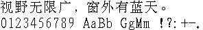

字样资料 / Windows 3.2 宋体
Windows 3.2 宋体 · 20×20
完整GB2312双字节7445字符，其中6763汉字均有非空点阵；另有95个可打印ASCII。 · 20×20 · 简体
放大观察 · 3×

原尺寸 · 1×
来源与字样信息
- 家族
- Windows 3.2 宋体
- 排版说明
- 固定两行原生像素样图，中文与原生半角ASCII之间4px空行；字间1px为样图排版间隔，不计入字模字宽。字框20×20，最大墨迹宽/高19×19，常见墨迹18×18。 BDF另用明确的上对齐字框约定，不声称恢复Windows原始基线。
- 字符框
- 20×20 px
- 字面／墨迹
- 19×19 px
- 字符范围
- 简体
- 样本文字
- 视野无限广，窗外有蓝天。
- 拉丁样文
- 0123456789 AaBb GgMm !?:+-.
- 覆盖说明
- 完整GB2312双字节7445字符，其中6763汉字均有非空点阵；另有95个可打印ASCII。
- 缺字
- 样文无缺字
- 风格
- 宋体点阵
- 用途
- 历史屏幕字库
- 字形来源
- 直接读取第三方存档安装盘镜像DISK6.img内SIMSUN20.FO_，离线SZDD解压得到CWIN30格式SIMSUN20.FON，未运行安装程序，未栅格化TrueType轮廓。镜像内SIMSUN/SIMHEI TTF不含嵌入位图。最初设计方式及逐点手修历史未证明。 本次未对实体软盘读盘。
- 授权状态
- 未确认开放再分发授权
- 许可说明
- 公开存档不等于开放授权。仅展示固定研究样文、格式说明和不含字模的提取脚本；不分发完整FON、BDF或字模JSON。使用原字体须另核权利。
- 说明
- 20×20为真实汉字存储字框；5188/6763汉字墨迹为18×18，最大墨迹宽/高为19×19。原ASCII来自同文件独立128槽半角字库，只导出U+0020–U+007E，不借字。与研究基线224项旧目录原图核SHA后排重：223项有可比样字且均存在同字像素差异；ChinaSea外字资料图不可同字比较。这不是全库原创性证明。BDF导出使用显式上对齐固定字框约定，不声称恢复Windows原基线。 另取回并核SHA验证已撤下的Solaris GB2312 12/14/20，逐6763汉字去空白比较；三组相同字均为0；与撤下Solaris20允许±4px平移后，汉字差异中位数92像素，未见近整库重复。
- 获取方式
- 来源
- Windows 3.2 第三方存档安装盘镜像
- 原生证据
说明：原始字框20×20；标准库行整数解码、NumPy逐位解码、Pillow原始1位解码逐7540个Unicode字形一致，全部物理位图数据逐字节往返，BDF回读逐7540字一致。
source_sha256：f245986e77adbb467dcbef6428e1a7abb01ccaf40ea61cc4a680c5dcdc445b9e
gb2312Doublebyte：7445
basicHan：6763
printableAscii：95
查看原生设计来源
字体使用与再分发按原来源许可执行。